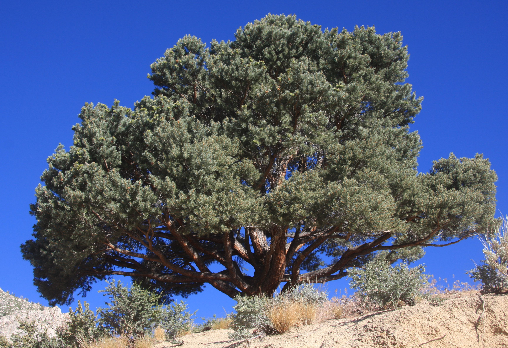

Colonized by Spain, the land that is now New Mexico became U.S. territory as part of the Gadsen Purchase in 1853, though New Mexico did not become a U.S. state until 1912. During World War II, New Mexico was the site of the top-secret Manhattan Project, in which top U.S. scientists raced to create the first atomic bomb, which was tested at the Trinity Bombsite, near Alamagordo, on July 16, 1945. In 1947, Roswell, New Mexico, became a topic of speculation about extraterrestrial life when a local farmer discovered unidentified debris on his property, which some believed was the remains of a crashed alien spacecraft. Visitors to New Mexico frequent attractions like the Very Large Array telescope in Socorro and the historic city of Santa Fe, which artist Georgia O’Keeffe famously called home.
| Date of Statehood | Capital | Population | Size |
|---|---|---|---|
| January 6, 1912 | Santa Fe | 2.12 million | 121,590 square miles |
Crescit Eundo (“It Grows as it Goes”)
Yucca
Greater Roadrunner
Piñon Pine
Interesting facts